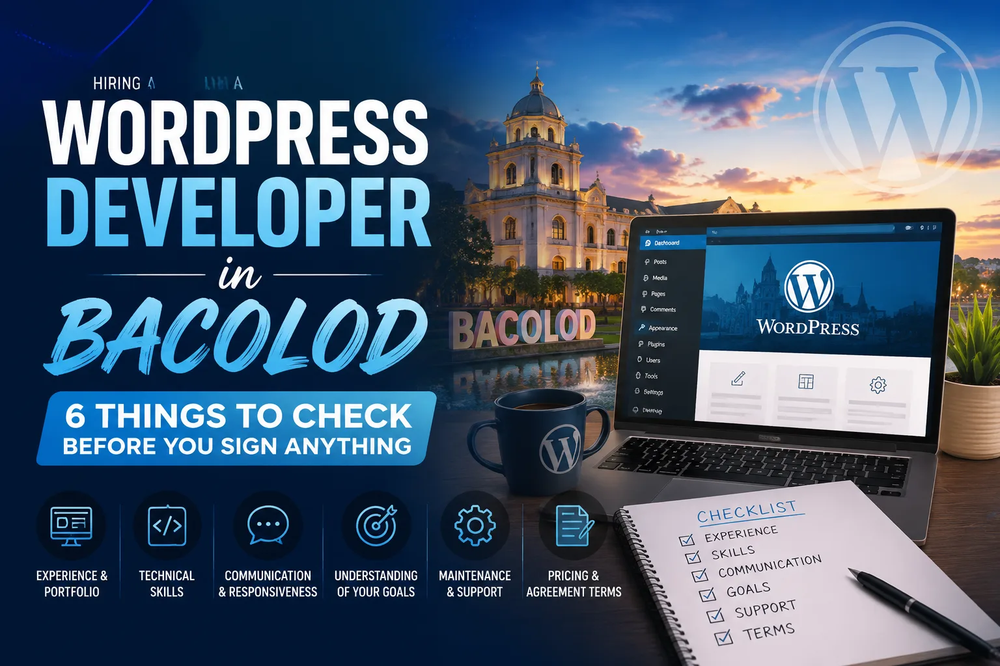
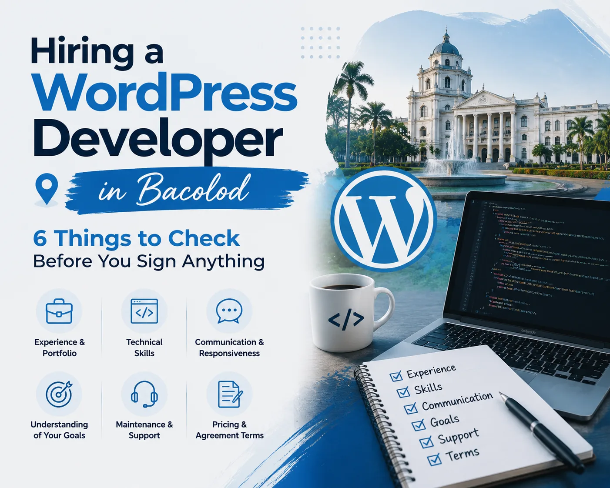

Hiring a WordPress developer in Bacolod means sorting through rates that range from $10 to over $100 per hour, with huge differences in quality at every price point. Before you commit, check six things: portfolio quality, technical skills, SEO and speed knowledge, communication style, post-launch support terms, and pricing transparency. This guide walks you through each one so you hire the right person the first time.
WordPress now powers over 40% of all websites on the internet. That makes it the most popular website platform by a wide margin. But "WordPress developer" can mean almost anything. It can mean a student who installed a free theme, or it can mean a specialist who builds custom layouts, optimizes page speed, and structures content to rank in Google.
If you're a business owner in Bacolod City looking to hire a WordPress developer, you've probably already noticed the quotes you're getting are all over the place. One might be ₱5,000. Another might be $1,500. That range exists for a reason, and understanding why is what protects you from making a costly mistake.
I'm Joel Gacho, a WordPress web designer and SEO specialist based here in Bacolod. I've built sites for local businesses across Negros Occidental and international clients in the US, UK, Canada, and Australia. This guide covers exactly what I'd check if I were sitting where you are right now.

What Should You Look For in a WordPress Developer?
When hiring a WordPress developer, check six things: a portfolio of live websites, solid technical skills (HTML, CSS, PHP), SEO and page speed knowledge, clear communication, defined post-launch support, and transparent pricing. These six criteria separate developers who deliver long-term results from those who launch a site and disappear.
Key hiring factors include experience, customization capability, mobile responsiveness, SEO awareness, and ongoing support. Most business owners focus only on price. That's understandable, but it's also the reason so many end up with slow, unoptimized, or generic websites that don't bring in customers.
Think of these six criteria as a checklist you run through before signing anything. Each one tells you something different about how the developer works, and what your finished site will actually look like in practice.
How Much Do WordPress Developers Charge in the Philippines?
Freelance WordPress developers in the Philippines typically charge $10 to $40 per hour, while agencies charge $30 to $100 or more per hour. For fixed-price projects, rates vary based on complexity, customization level, and the developer's experience. Expect to pay more for a developer who builds from scratch than one who populates a pre-made template.
Here's what those rates usually reflect in practice:
- Lower end: Developers using free themes, minimal customization, and basic page setups. That can work for a very simple site, but it won't stand out or perform well in search results.
- Mid-range: Typically includes a page builder like Elementor Pro, a lightweight theme like Astra, and some attention to speed and SEO fundamentals. This is the sweet spot for most local service businesses.
- Higher end: Reflects deeper technical work — custom code, performance tuning, conversion-focused design, and real ongoing support after launch.
My own packages start at $300 to $500 for a Basic build, move to $600 to $1,200 for a Standard project, and $1,500 or more for a Premium build. That range reflects real differences in scope, customization, and strategic input — not arbitrary pricing.
Portfolio and Past Work: What to Actually Check
A developer's portfolio is the fastest way to see whether they can deliver. But not all portfolios tell the same story, and a few things are worth checking carefully before you move forward.
Check for live websites, not just screenshots
Screenshots can be edited or staged. If you can't visit the actual URL and browse around yourself, ask why. A confident developer will have no problem sending you live links.
Look for variety across industries and layouts
A strong portfolio shows different industries, different layouts, and different business goals. A developer who has only built one type of site may struggle with yours if it differs from what they're used to.
Open every site on your phone
Mobile responsiveness is non-negotiable. Google uses mobile-first indexing, which means your mobile site is what Google evaluates when deciding where to rank you. If portfolio sites look broken or cluttered on a phone, that's a problem.
Ask whether those sites are still maintained
A developer who stays in touch with past clients is one who takes long-term results seriously — and one who is more likely to support you after launch too.
Does the Developer Understand SEO and Site Speed?
A skilled WordPress developer must understand SEO and site speed because a beautiful website that loads slowly or isn't indexed properly will not bring you customers. These are not optional add-ons — they should be built into every project from day one.
Speed matters more than most people expect. Google uses page speed as a direct ranking factor, and slow-loading pages lose visitors before they ever see your content. My own site, jgdigitalhub.com, scores 91 out of 100 on PageSpeed Insights. That result comes from using WP Rocket for caching and ShortPixel for image compression on every build I deliver. Neither tool is complicated to set up, but most developers don't bother.
When you're vetting a developer, ask what tools they use for speed optimization. If they can't answer clearly, that's a warning sign. SEO works the same way — ask whether they install a plugin like Yoast or Rank Math, whether they set up proper heading structure (H1, H2, H3), and whether they optimize title tags and meta descriptions. My site speed checklist and on-page SEO checklist are good references to bring into that conversation.
Custom Design vs. Pre-Made Templates: Why It Matters for Your Brand
One of the most common misunderstandings in WordPress development is the difference between a truly custom design and filling in a pre-made template. Both can look polished in a screenshot — but they are not the same thing, and the difference shows up in ways that matter.
A pre-made template is a pre-built design that you download, then populate with your own content. It's fast and cheap to set up. But it often comes with bloated code, design decisions that don't fit your brand, and limited flexibility when you want to make changes later.
A custom Elementor Pro design starts from your brand: your colors, your fonts, your layout logic, and your customer journey. I build every section from scratch using Elementor Pro on an Astra theme base, which is lightweight and built for performance. The final site reflects your business, not a template that thousands of other businesses are also using.
"When reviewing a quote, ask directly whether the developer is working from a purchased template or building your design from scratch. That single question reveals a lot about what you're actually paying for."
There's also a performance difference. Pre-made templates often load scripts and styles you don't need, which slows the site down and hurts your search rankings. A custom build only includes what's actually there for a reason.
What Happens After the Website Launches?
Post-launch terms are what separate a one-time transaction from a real working relationship. Before you hire anyone, ask three things: who owns the website files, who holds the hosting and domain logins, and what happens if something breaks after launch?
- You should own your website. Your domain is registered in your name, your hosting account is yours, and you have access to every login. A developer who holds these on your behalf is creating a dependency that works in their favor, not yours.
- Ask about support after launch. Even a short post-launch support period matters. Basic training on how to update your own content is also worth asking about — you shouldn't need to contact your developer every time you want to swap out a photo or change a business hour.
- Get the support terms in writing. Knowing these terms before you sign protects you from surprises after the invoice is paid and the project is closed.
Local Bacolod Developer or Remote: Which Is the Better Choice?
Hiring a local WordPress developer in Bacolod gives you real-time communication, cultural familiarity with local business needs, and no time zone friction. A remote developer can work from anywhere in the world, but clear project scope becomes even more critical. A vague brief like "I need WordPress help" consistently attracts the wrong candidates and leads to mismatched expectations.
The most important step before hiring anyone — local or remote — is defining exactly what you need. How many pages? What specific features? Do you have your content ready or does the developer need to help with that? What does a successful launch look like?
A local Bacolod developer has natural advantages for businesses serving Negros Occidental. You can meet in person, review work face to face, and there's an added layer of accountability that comes with being in the same community. Local knowledge also helps when building location-specific SEO into your service pages.
Remote developers can bring deeper specialization and a wider portfolio of work, but communication takes more deliberate effort and requires a written brief from day one. I work with both local and international clients, so I've built my process around clear scope, regular updates, and communication that works regardless of location.
Conclusion: Your 6-Point Hiring Checklist
Before you hire a WordPress developer in Bacolod, run through this checklist:
- Portfolio: Are the sites live, mobile-friendly, and varied across industries?
- Technical skills: Do they know HTML, CSS, PHP, and a professional page builder like Elementor Pro?
- SEO and speed: Do they use caching tools, image compression, and on-page SEO best practices?
- Communication: Are they clear, responsive, and easy to work with throughout the process?
- Post-launch support: Who owns the site, who holds the logins, and what support comes after launch?
- Pricing transparency: Is the quote tied to real, defined deliverables rather than vague hourly estimates?
Finding someone who checks all six boxes takes more effort upfront — but it saves you from costly rebuilds, wasted budgets, and websites that look great but never bring in business. If you want to skip the guesswork, take a look at my WordPress web design packages or go straight to request a free quote. I'd be glad to show you what a transparent, quality-focused build looks like.
Frequently Asked Questions
How much should I pay for a WordPress website in the Philippines?
For a basic WordPress website in the Philippines, expect to pay around $300 to $500. A standard multi-page business site with a custom design, speed optimization, and SEO setup typically falls between $600 and $1,200. Premium builds with advanced features start at $1,500 or more. The price should always be tied to clearly defined deliverables, not just an hourly rate with no scope.
What questions should I ask a WordPress developer before hiring?
Ask to see live examples of past work, not just screenshots. Ask what tools they use for speed and SEO, who will own the domain and hosting files after launch, whether the design is custom or template-based, and what support is included after the site goes live. Clear, confident answers to these questions separate experienced professionals from those filling in templates.
Should I hire a freelancer or an agency for my WordPress website?
For most small to medium businesses, a skilled freelancer is the stronger choice. Freelancers cost less, communicate directly, and are often more personally invested in the outcome. Agencies add overhead and account management layers that aren't always necessary. The key is vetting the individual's portfolio, technical skills, and communication style before committing.
Do I need to provide content (text and images) or does the developer handle that?
This depends on your agreement, so ask upfront before the project starts. Many developers expect you to supply the text and photos so they can focus on design and functionality. Others offer copywriting or stock image sourcing as paid add-ons. Either way, having your content ready before the build begins speeds up the project and reduces unnecessary back-and-forth.
How do I know if a developer's portfolio is real and not staged?
Click every link in their portfolio and visit the live site yourself. Test each site on your phone and run it through Google PageSpeed Insights to check load time. If the sites load quickly, look professional on mobile, and serve real businesses in recognizable industries, the portfolio is almost certainly genuine. You can also ask for a contact at one of the listed clients to verify the work directly.
What is the difference between WordPress.com and WordPress.org?
WordPress.com is a hosted platform with limited customization options and monthly subscription fees. WordPress.org is the free, open-source software that professional developers use. It runs on your own hosting account and gives you full control over your design, plugins, and data. When hiring a WordPress developer, confirm they are building on WordPress.org, not the restricted hosted version.